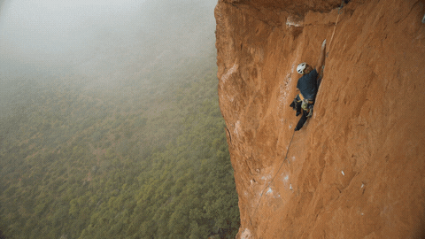
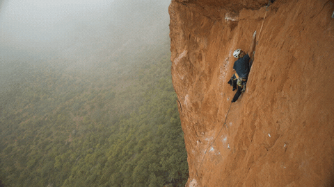
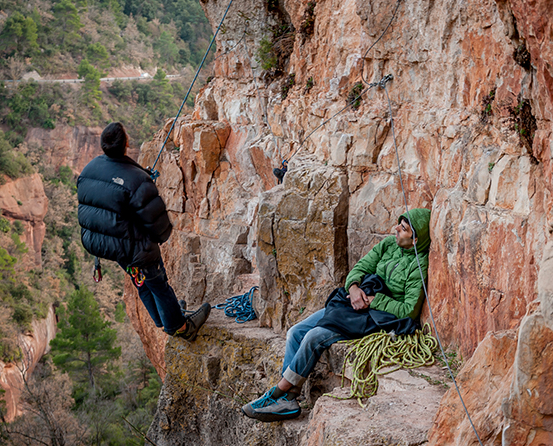

Siurana, conocida como "Siudrama", escuela de escalada deportiva, influyente desde hace 30 años.
Reconocida mundialmente por rutas técnicas y desafiantes en roca caliza de alta calidad.
Atrae a escaladores de todo el mundo por su diversidad de rutas, desde placa vertical hasta fisuras y desplomes.

- Un mar de roca y regletas.
- Siurana cuenta con más de 1500 vías de escalada deportiva.
- Caliza de máxima calidad, regletas, placas y sol.
|
Información vías |
| 2 / 5+ |
90 |
| 6a / 6c+ |
425 |
| 7a / 7c+ |
593 |
| 8a / 9c+ |
229 |
| Proyectos |
50 |